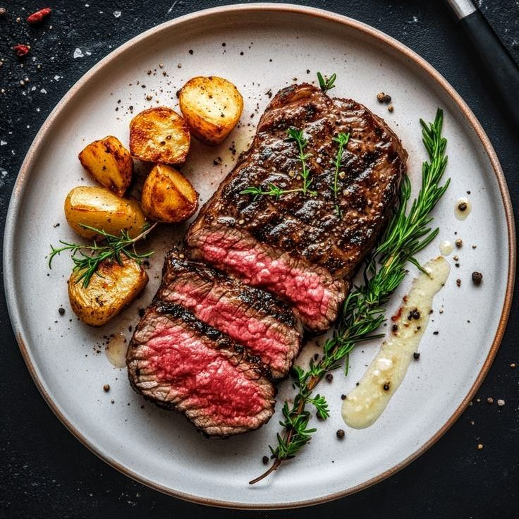

Menú de Cortes
Bife de Chorizo

- Ingredientes:
Bife de chorizo, sal, pimienta, aceite de oliva, ajo, romero.
- Receta:
Sazonar el bife con sal y pimienta. Calienta una sartén con aceite de oliva, añade ajo y romero. Cocina el bife por 5 minutos de cada lado, hasta alcanzar el punto de cocción deseado.
Entrecot
- Ingredientes:
Entrecot, sal gruesa, aceite de oliva, ajo, tomillo.
- Receta:
Sazona el entrecot con sal gruesa y aceite de oliva. Cocina a fuego alto durante 3-4 minutos de cada lado. Añade ajo y tomillo para dar más sabor.
Costillas de Cerdo
- Ingredientes:
Costillas de cerdo, salsa barbacoa, sal, pimienta, azúcar moreno, ajo en polvo.
- Receta:
Sazona las costillas con sal, pimienta, azúcar moreno y ajo en polvo. Cubre con salsa barbacoa y hornea a 180°C durante 45 minutos, untando con más salsa cada 15 minutos.